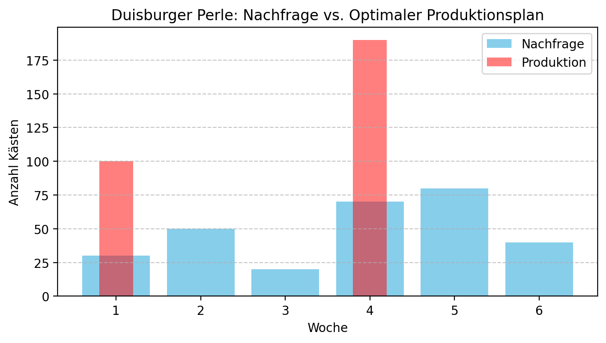

Wer noch Schwierigkeiten mit dem CLSP und der Lagerbilanzgleichung hat, kann sich gerne folgendes Video aus der Vorlesung Grundlagen des Operations Research ansehen:
Aufgabe 1: Exakte Losgrößenplanung für Saisonbier
Die lokale Traditionsbrauerei “Duisburger Perle” plant die Produktion ihres beliebten Saisonbiers “Frühlings-Helles” für die kommenden 6 Wochen. Da die Nachfrage schwankt und das Aufsetzen eines neuen Brauvorgangs (Rüsten) mit erheblichen Kosten verbunden ist, soll ein kostenoptimaler Produktionsplan gefunden werden.
Die Brauerei hat die folgenden Daten ermittelt:
Rüstkosten (\(s\)): 250 GE pro Brauvorgang (Los)
Lagerkostensatz (\(h\)): 2 GE pro Kasten und Woche
Wöchentliche Nachfrage (\(d_t\)):
Woche (t)
1
2
3
4
5
6
Nachfrage (Kästen)
30
50
20
70
80
40
Um die Gesamtkosten zu minimieren, soll das exakte Verfahren von Wagner und Whitin (Dynamische Optimierung) angewendet werden. Es wird angenommen, dass zu Beginn kein Lagerbestand vorhanden ist und am Ende der 6. Woche ebenfalls kein Bestand verbleiben soll.
Ihre Aufgaben:
Kostenmatrix erstellen: Berechnen Sie die Kosten \(c_{\tau j}\) für jedes mögliche Los, das in Woche \(\tau\) produziert wird, um die Nachfrage bis einschließlich Woche \(j\) zu decken.
Wagner-Whitin-Algorithmus anwenden: Ermitteln Sie rekursiv die minimalen Gesamtkosten \(f_i\) für einen Planungszeitraum von \(i = 1, \ldots, 6\) Wochen. Notieren Sie sich bei jedem Schritt, welche Entscheidung zur minimalen Kosten führt.
Optimalen Produktionsplan ableiten: Bestimmen Sie durch Rückverfolgung (Backtracking) aus den Ergebnissen von Schritt 2, in welchen Wochen eine Produktion stattfinden soll und wie groß die jeweilige Losgröße ist. Wie hoch sind die minimalen Gesamtkosten?
Lösung (Python-Code):
Tipps und wichtige Formeln
1. Kostenmatrix \(c_{\tau j}\)
Die Kostenmatrix ist das Herzstück des Algorithmus. Der Wert \(c_{\tau j}\) gibt an, was es kostet, in Periode \(\tau\) ein Los zu produzieren, das exakt die Nachfrage von Periode \(\tau\) bis einschließlich Periode \(j\) deckt.
Formel:\(c_{\tau j} = s + \sum_{k=\tau+1}^{j} h \cdot (k-\tau) \cdot d_k\)
In Worten: Die Kosten setzen sich zusammen aus einmaligen Rüstkosten\(s\) und den kumulierten Lagerkosten. Die Lagerkosten für den Bedarf \(d_k\) (der in Periode \(\tau\) produziert, aber erst in \(k\) gebraucht wird) betragen \(h \cdot (k-\tau) \cdot d_k\), da die Menge \(d_k\) für \((k-\tau)\) Perioden gelagert werden muss.
2. Der Wagner-Whitin-Algorithmus (Rekursion)
Der Algorithmus findet die minimalen Kosten \(f_j\) für ein Problem mit \(j\) Perioden, indem er alle Möglichkeiten für das letzte Los ausprobiert.
In Worten: Die minimalen Kosten für \(j\) Perioden (\(f_j\)) ergeben sich, indem man die beste Option auswählt: “Was kostet es, wenn das letzte Los in Periode \(\tau=1\) startet und bis \(j\) reicht? Was, wenn es in \(\tau=2\) startet?” usw. Die Kosten einer Option sind die Summe der Kosten für das letzte Los (\(c_{\tau j}\)) und den minimalen Kosten für den Zeitraum davor (\(f_{\tau-1}\)).
3. Backtracking
Starten Sie bei \(j=T\) (im Beispiel \(j=6\)). Schauen Sie nach, welches \(\tau\) zu den minimalen Kosten \(f_6\) geführt hat. Das ist Ihr letztes Produktionslos (von \(\tau\) bis 6).
Der nächste Untersuchungszeitpunkt ist nun \(j = \tau - 1\). Schauen Sie wieder nach, welches \(\tau'\) zu den minimalen Kosten \(f_{\tau-1}\) geführt hat. Das ist Ihr vorletztes Los.
Wiederholen Sie dies, bis Sie bei \(j=0\) angekommen sind.
1. Berechnung der Kostenmatrix c_tau,j:
Produktion in Periode tau=1:
Bedarf bis Periode j=1: Lagerkosten=0, Gesamtkosten c_1,1 = 250
Bedarf bis Periode j=2: Lagerkosten=100, Gesamtkosten c_1,2 = 350
Bedarf bis Periode j=3: Lagerkosten=180, Gesamtkosten c_1,3 = 430
Bedarf bis Periode j=4: Lagerkosten=600, Gesamtkosten c_1,4 = 850
Bedarf bis Periode j=5: Lagerkosten=1240, Gesamtkosten c_1,5 = 1490
Bedarf bis Periode j=6: Lagerkosten=1640, Gesamtkosten c_1,6 = 1890
Produktion in Periode tau=2:
Bedarf bis Periode j=2: Lagerkosten=0, Gesamtkosten c_2,2 = 250
Bedarf bis Periode j=3: Lagerkosten=40, Gesamtkosten c_2,3 = 290
Bedarf bis Periode j=4: Lagerkosten=320, Gesamtkosten c_2,4 = 570
Bedarf bis Periode j=5: Lagerkosten=800, Gesamtkosten c_2,5 = 1050
Bedarf bis Periode j=6: Lagerkosten=1120, Gesamtkosten c_2,6 = 1370
Produktion in Periode tau=3:
Bedarf bis Periode j=3: Lagerkosten=0, Gesamtkosten c_3,3 = 250
Bedarf bis Periode j=4: Lagerkosten=140, Gesamtkosten c_3,4 = 390
Bedarf bis Periode j=5: Lagerkosten=460, Gesamtkosten c_3,5 = 710
Bedarf bis Periode j=6: Lagerkosten=700, Gesamtkosten c_3,6 = 950
Produktion in Periode tau=4:
Bedarf bis Periode j=4: Lagerkosten=0, Gesamtkosten c_4,4 = 250
Bedarf bis Periode j=5: Lagerkosten=160, Gesamtkosten c_4,5 = 410
Bedarf bis Periode j=6: Lagerkosten=320, Gesamtkosten c_4,6 = 570
Produktion in Periode tau=5:
Bedarf bis Periode j=5: Lagerkosten=0, Gesamtkosten c_5,5 = 250
Bedarf bis Periode j=6: Lagerkosten=80, Gesamtkosten c_5,6 = 330
Produktion in Periode tau=6:
Bedarf bis Periode j=6: Lagerkosten=0, Gesamtkosten c_6,6 = 250
Kostenmatrix c_τj:
j=1 j=2 j=3 j=4 j=5 j=6
τ=1 250.0 350.0 430.0 850.0 1490.0 1890.0
τ=2 inf 250.0 290.0 570.0 1050.0 1370.0
τ=3 inf inf 250.0 390.0 710.0 950.0
τ=4 inf inf inf 250.0 410.0 570.0
τ=5 inf inf inf inf 250.0 330.0
τ=6 inf inf inf inf inf 250.0
2. Anwendung des Wagner-Whitin-Algorithmus:
Berechne minimale Kosten f_1:
Option: Letztes Los in tau=1 für Bedarf bis 1. Kosten = f_0 + c_1,1 = 0 + 250 = 250
-> Minimale Kosten f_1 = 250 (letztes Los in Periode 1)
Berechne minimale Kosten f_2:
Option: Letztes Los in tau=1 für Bedarf bis 2. Kosten = f_0 + c_1,2 = 0 + 350 = 350
Option: Letztes Los in tau=2 für Bedarf bis 2. Kosten = f_1 + c_2,2 = 250 + 250 = 500
-> Minimale Kosten f_2 = 350 (letztes Los in Periode 1)
Berechne minimale Kosten f_3:
Option: Letztes Los in tau=1 für Bedarf bis 3. Kosten = f_0 + c_1,3 = 0 + 430 = 430
Option: Letztes Los in tau=2 für Bedarf bis 3. Kosten = f_1 + c_2,3 = 250 + 290 = 540
Option: Letztes Los in tau=3 für Bedarf bis 3. Kosten = f_2 + c_3,3 = 350 + 250 = 600
-> Minimale Kosten f_3 = 430 (letztes Los in Periode 1)
Berechne minimale Kosten f_4:
Option: Letztes Los in tau=1 für Bedarf bis 4. Kosten = f_0 + c_1,4 = 0 + 850 = 850
Option: Letztes Los in tau=2 für Bedarf bis 4. Kosten = f_1 + c_2,4 = 250 + 570 = 820
Option: Letztes Los in tau=3 für Bedarf bis 4. Kosten = f_2 + c_3,4 = 350 + 390 = 740
Option: Letztes Los in tau=4 für Bedarf bis 4. Kosten = f_3 + c_4,4 = 430 + 250 = 680
-> Minimale Kosten f_4 = 680 (letztes Los in Periode 4)
Berechne minimale Kosten f_5:
Option: Letztes Los in tau=1 für Bedarf bis 5. Kosten = f_0 + c_1,5 = 0 + 1490 = 1490
Option: Letztes Los in tau=2 für Bedarf bis 5. Kosten = f_1 + c_2,5 = 250 + 1050 = 1300
Option: Letztes Los in tau=3 für Bedarf bis 5. Kosten = f_2 + c_3,5 = 350 + 710 = 1060
Option: Letztes Los in tau=4 für Bedarf bis 5. Kosten = f_3 + c_4,5 = 430 + 410 = 840
Option: Letztes Los in tau=5 für Bedarf bis 5. Kosten = f_4 + c_5,5 = 680 + 250 = 930
-> Minimale Kosten f_5 = 840 (letztes Los in Periode 4)
Berechne minimale Kosten f_6:
Option: Letztes Los in tau=1 für Bedarf bis 6. Kosten = f_0 + c_1,6 = 0 + 1890 = 1890
Option: Letztes Los in tau=2 für Bedarf bis 6. Kosten = f_1 + c_2,6 = 250 + 1370 = 1620
Option: Letztes Los in tau=3 für Bedarf bis 6. Kosten = f_2 + c_3,6 = 350 + 950 = 1300
Option: Letztes Los in tau=4 für Bedarf bis 6. Kosten = f_3 + c_4,6 = 430 + 570 = 1000
Option: Letztes Los in tau=5 für Bedarf bis 6. Kosten = f_4 + c_5,6 = 680 + 330 = 1010
Option: Letztes Los in tau=6 für Bedarf bis 6. Kosten = f_5 + c_6,6 = 840 + 250 = 1090
-> Minimale Kosten f_6 = 1000 (letztes Los in Periode 4)
3. Ableitung des optimalen Produktionsplans (Backtracking):
Bedarf bis Woche 6 wird durch Produktion in Woche 4 gedeckt. Losgröße: 190.
Bedarf bis Woche 3 wird durch Produktion in Woche 1 gedeckt. Losgröße: 100.
Optimaler Produktionsplan für 'Frühlings-Helles':
Produktionswoche Losgröße
0 1 100
1 4 190
Minimale Gesamtkosten: 1000 GE

Aufgabe 2: Heuristische Losgrößenplanung
Die Geschäftsführung der “Duisburger Perle” ist mit dem optimalen Plan sehr zufrieden, findet das Wagner-Whitin-Verfahren jedoch recht aufwändig für die schnelle, wöchentliche Planung. Ein findiger Braumeister schlägt vor, einfachere Heuristiken zu verwenden, die “ziemlich gute” Ergebnisse liefern, aber schneller zu berechnen sind.
Sie erhalten den Auftrag, drei gängige Heuristiken auf die Daten aus Aufgabe 1 anzuwenden und die Ergebnisse mit der optimalen Lösung zu vergleichen.
Daten (wie in Aufgabe 1):
Rüstkosten (\(s\)): 250 GE
Lagerkostensatz (\(h\)): 2 GE pro Kasten und Woche
Stückkostenverfahren (Least-Unit-Cost): Bilden Sie Lose, indem Sie so lange Periodenbedarfe zusammenfassen, wie die durchschnittlichen Stückkosten des Loses sinken.
Stückperiodenausgleichsverfahren (Part-Period-Balancing): Bilden Sie Lose, indem Sie so lange Periodenbedarfe zusammenfassen, wie die kumulierten Lagerkosten des Loses die Rüstkosten nicht übersteigen.
Silver-Meal-Verfahren: Bilden Sie Lose, indem Sie so lange Periodenbedarfe zusammenfassen, wie die durchschnittlichen Kosten pro Periode sinken.
Vergleich: Stellen Sie die Produktionspläne und Gesamtkosten der drei Heuristiken der optimalen Lösung aus Aufgabe 1 gegenüber. Wie gut schlagen sich die Heuristiken?
Lösung:
Tipps und wichtige Formeln
Die Heuristiken entscheiden iterativ, wie viele zukünftige Bedarfe in einem Los zusammengefasst werden. Gestartet wird in der ersten Periode mit Bedarf. Man prüft, ob man den Bedarf der nächsten Periode(n) mit aufnimmt.
1. Stückkostenverfahren (Least-Unit-Cost, LUC)
Entscheidungsmetrik: Durchschnittliche Kosten pro Produkteinheit.
Formel:\(\text{Stückkosten}(k) = \frac{s + \text{kumulierte Lagerkosten für } k \text{ Perioden}}{\text{kumulierter Bedarf für } k \text{ Perioden}}\)
Regel: Fasse so lange weitere Perioden \(k\) in das Los mit auf, wie die Stückkosten sinken. Wenn sie steigen, war die vorherige Zusammenfassung die beste.
Grundidee: Ein Los ist dann “gut”, wenn die anfallenden Lagerkosten die eingesparten Rüstkosten ungefähr ausgleichen.
Formel: Vergleiche kumulierte Lagerkosten mit Rüstkosten s.
Regel: Fasse so lange weitere Perioden in das Los mit auf, wie die kumulierten Lagerkosten die Rüstkosten snicht übersteigen. Die letzte Periode, für die das gilt, bestimmt die Losgröße.
3. Silver-Meal-Verfahren (SM)
Entscheidungsmetrik: Durchschnittliche Kosten pro Periode (nicht pro Einheit).
Formel:\(\text{Kosten pro Periode}(k) = \frac{s + \text{kumulierte Lagerkosten für } k \text{ Perioden}}{k}\)
Regel: Identisch zum Stückkostenverfahren: Fasse so lange weitere Perioden \(k\) in das Los mit auf, wie die Kosten pro Periode sinken. Wenn sie steigen, war die vorherige Zusammenfassung die beste.
--- Starte Stückkostenverfahren ---
Neues Los startet in Periode 1.
Prüfe j=1: Stückkosten = 8.33
Prüfe j=2: Stückkosten = 4.38
Prüfe j=3: Stückkosten = 4.30
Prüfe j=4: Stückkosten = 5.00
-> Stückkosten steigt. Wähle vorherige Periode.
-> Los gebildet: Produktion in 1 für Bedarf bis 3. Größe: 100
Neues Los startet in Periode 4.
Prüfe j=4: Stückkosten = 3.57
Prüfe j=5: Stückkosten = 2.73
Prüfe j=6: Stückkosten = 3.00
-> Stückkosten steigt. Wähle vorherige Periode.
-> Los gebildet: Produktion in 4 für Bedarf bis 5. Größe: 150
Neues Los startet in Periode 6.
Prüfe j=6: Stückkosten = 6.25
-> Los gebildet: Produktion in 6 für Bedarf bis 6. Größe: 40
--- Starte Stückperiodenausgleichsverfahren ---
Neues Los startet in Periode 1.
j=1: Kum. Lagerkosten (0) <= Rüstkosten (250). Mache weiter.
j=2: Kum. Lagerkosten (100) <= Rüstkosten (250). Mache weiter.
j=3: Kum. Lagerkosten (180) <= Rüstkosten (250). Mache weiter.
j=4: Kum. Lagerkosten (600) > Rüstkosten (250). Stoppe und wähle j-1.
-> Los gebildet: Produktion in 1 für Bedarf bis 3. Größe: 100
Neues Los startet in Periode 4.
j=4: Kum. Lagerkosten (0) <= Rüstkosten (250). Mache weiter.
j=5: Kum. Lagerkosten (160) <= Rüstkosten (250). Mache weiter.
j=6: Kum. Lagerkosten (320) > Rüstkosten (250). Stoppe und wähle j-1.
-> Los gebildet: Produktion in 4 für Bedarf bis 5. Größe: 150
Neues Los startet in Periode 6.
j=6: Kum. Lagerkosten (0) <= Rüstkosten (250). Mache weiter.
-> Los gebildet: Produktion in 6 für Bedarf bis 6. Größe: 40
--- Starte Silver-Meal-Verfahren ---
Neues Los startet in Periode 1.
Prüfe j=1: Kosten/Periode = 250.00
Prüfe j=2: Kosten/Periode = 175.00
Prüfe j=3: Kosten/Periode = 143.33
Prüfe j=4: Kosten/Periode = 212.50
-> Kosten/Periode steigt. Wähle vorherige Periode.
-> Los gebildet: Produktion in 1 für Bedarf bis 3. Größe: 100
Neues Los startet in Periode 4.
Prüfe j=4: Kosten/Periode = 250.00
Prüfe j=5: Kosten/Periode = 205.00
Prüfe j=6: Kosten/Periode = 190.00
-> Los gebildet: Produktion in 4 für Bedarf bis 6. Größe: 190
--- 4. Vergleich der Ergebnisse ---
Methode Gesamtkosten (GE) Abweichung vom Optimum (%)
0 Optimal (Wagner-Whitin) 1000 0.0
1 Stückkosten 1090 9.0
2 Stückperioden 1090 9.0
3 Silver-Meal 1000 0.0
Detailansicht der Pläne:
Optimal: [{'Produktionswoche': 1, 'Losgröße': 100}, {'Produktionswoche': 4, 'Losgröße': 190}]
Stückkosten: [{'Produktionswoche': 1, 'Losgröße': 100}, {'Produktionswoche': 4, 'Losgröße': 150}, {'Produktionswoche': 6, 'Losgröße': 40}]
Stückperioden: [{'Produktionswoche': 1, 'Losgröße': 100}, {'Produktionswoche': 4, 'Losgröße': 150}, {'Produktionswoche': 6, 'Losgröße': 40}]
Silver-Meal: [{'Produktionswoche': 1, 'Losgröße': 100}, {'Produktionswoche': 4, 'Losgröße': 190}]
In diesem Fall finden sowohl das Stückkosten- als auch das Silver-Meal-Verfahren die optimale Lösung. Das Stückperiodenausgleichsverfahren weicht leicht ab und erzeugt etwas höhere Kosten. Dies zeigt, dass Heuristiken sehr gute, aber nicht immer garantiert optimale Ergebnisse liefern. Ihr großer Vorteil liegt in der einfachen und schnellen Anwendbarkeit.
Aufgabe 3: Losgrößenplanung mit Kapazitätsgrenzen (CLSP)
Die “Duisburger Perle” stellt fest, dass die Gär- und Lagertanks einen Engpass darstellen. Es kann nicht unbegrenzt viel Bier pro Woche produziert werden. Zusätzlich zum “Frühlings-Hellen” wird nun ein zweites Saisonbier, das “Maibock”, geplant. Beide Biere konkurrieren um die gleiche, begrenzte wöchentliche Kapazität.
Neue & Gegebene Daten:
Produkt 1: Frühlings-Helles (Daten wie gehabt)
Nachfrage: [30, 50, 20, 70, 80, 40]
Rüstkosten \(s_{helles}\): 250 GE, Lagerkosten \(h_{helles}\): 2 GE
Kapazitätsbedarf pro Kasten \(tb_{helles}\): 1,0 KE
Kapazitätsbedarf für Rüstvorgang \(tr_{helles}\): 20 KE
Produkt 2: Maibock (Neue Daten)
Nachfrage: [20, 30, 60, 40, 30, 50]
Rüstkosten \(s_{bock}\): 200 GE, Lagerkosten \(h_{bock}\): 2.5 GE
Kapazitätsbedarf pro Kasten \(tb_{bock}\): 1,2 KE
Kapazitätsbedarf für Rüstvorgang \(tr_{bock}\): 15 KE
Wöchentliche Gesamtkapazität (\(b_t\)): 150 KE (Kapazitätseinheiten)
Ihre Aufgaben:
Unabhängige Planung: Ermitteln Sie den kostenoptimalen, unkapazitierten Produktionsplan für das neue “Maibock”-Bier mit dem Wagner-Whitin-Algorithmus.
Kapazitätsprüfung: Überlagern Sie den optimalen Plan für “Frühlings-Helles” (aus Aufgabe 1) mit dem neuen Plan für “Maibock”. Berechnen Sie für jede Woche die gesamte Kapazitätsauslastung durch Produktion und Rüstvorgänge beider Biersorten. Identifizieren Sie alle Wochen, in denen die Gesamtkapazität von 150 KE überschritten wird.
Heuristische Anpassung: Schlagen Sie eine einfache, plausible Anpassung für den kombinierten Produktionsplan vor, um die Kapazitätsverletzungen zu beheben (z.B. durch Vorziehen oder Aufteilen einer Produktion). Berechnen Sie die neuen Gesamtkosten (Summe der Kosten beider Pläne) für Ihren angepassten, kapazitätskonformen Plan.
Diskussion: Erläutern Sie kurz, warum das separate Anwenden des Wagner-Whitin-Algorithmus und anschließende Anpassen keine garantiert optimale Lösung für das kapazitierte Problem (CLSP) liefert.
Lösung:
Tipps und wichtige Formeln
1. Unkapazitierte Planung (Wagner-Whitin)
Dieser Schritt ist identisch zur Aufgabe 1. Sie wenden den Wagner-Whitin-Algorithmus einfach mit den Daten des neuen Produkts (“Maibock”) an, um dessen (isoliert betrachtet) optimalen Produktionsplan zu finden.
2. Kapazitätsprüfung
Die Gesamtkapazität in einer Woche t wird durch die Summe aller Produktions- und Rüstaktivitäten in dieser Woche verbraucht.
Setup_{Produkt,t} ist eine binäre Variable: 1, wenn für das Produkt in Woche t produziert (also gerüstet) wird, sonst 0.
Der berechnete Kapazitätsbedarf_t wird mit dem Kapazitätslimit_t (150 KE) verglichen.
3. Heuristische Anpassung
Hier gibt es keine Standardformel, es geht um eine logische “Reparatur” des Plans.
Ansätze:
Vorziehen: Kann die Produktion eines Loses, das den Konflikt verursacht, in eine frühere Woche mit freier Kapazität verschoben werden? (Achtung, erhöht Lagerkosten!)
Aufteilen: Kann ein großes Los in zwei kleinere aufgeteilt werden, die in unterschiedlichen Wochen produziert werden? (Achtung, verursacht zusätzliche Rüstkosten!)
Ziel ist es, einen zulässigen Plan zu finden und die dadurch entstehenden Mehrkosten zu berechnen.
Das Kernproblem ist die Ressourcenkonkurrenz. Die Entscheidung, ein großes Los für Produkt A zu produzieren (lokal optimal, um Rüstkosten zu sparen), kann Produkt B die Kapazität “stehlen” und es zu einem teureren Produktionszeitpunkt zwingen.
Eine simultane Optimierung (die sehr komplex ist) würde diesen Trade-off zwischen den Produkten direkt berücksichtigen, anstatt sie getrennt zu betrachten und nachträglich zu reparieren. Die “Reparatur” ist selten der global optimale Weg.
Optimaler unkapazitierter Plan für Maibock:
Produktionswoche Losgröße
0 1 50
1 3 100
2 5 80
Minimale Kosten: 900 GE
2. Kapazitätsprüfung des kombinierten unkapazitierten Plans:
Prod_Helles Prod_Bock Setup_Helles Setup_Bock Cap_Used Cap_Limit \
1 100 50 1 1 195.0 150
2 0 0 0 0 0.0 150
3 0 100 0 1 135.0 150
4 190 0 1 0 210.0 150
5 0 80 0 1 111.0 150
6 0 0 0 0 0.0 150
Violation
1 True
2 False
3 False
4 True
5 False
6 False
-> Kapazitätsverletzung in Woche(n): [1, 4]
3. Heuristische Anpassung:
Die Analyse zeigt, dass simple Anpassungen (z.B. das Aufteilen eines einzelnen Loses) aufgrund der hohen Kapazitätsauslastung zu neuen Konflikten oder unzulässigem Backlogging führen.
Eine plausible heuristische Lösung erfordert daher eine umfassende Neuordnung der Produktionslose, um einen kapazitätskonformen Plan zu finden:
Angepasster Plan für Helles:
Produktionswoche Losgröße
0 1 100
1 2 120
2 4 70
Angepasster Plan für Maibock:
Produktionswoche Losgröße
0 3 50
1 5 100
2 6 80
Kapazitätsprüfung des angepassten Plans:
Prod_Helles Prod_Bock Setup_Helles Setup_Bock Cap_Used Cap_Limit \
1 100 0 1 0 120.0 150
2 120 0 1 0 140.0 150
3 0 50 0 1 75.0 150
4 70 0 1 0 90.0 150
5 0 100 0 1 135.0 150
6 0 80 0 1 111.0 150
Violation
1 False
2 False
3 False
4 False
5 False
6 False
Ursprüngliche unkapazitierte Kosten: 1900 GE
Neue Gesamtkosten des zulässigen Plans: 3330 GE
-> Der angepasste Plan ist nun kapazitätskonform.
4. Diskussion:
Das Problem bei der separaten Optimierung ist, dass die Entscheidungen für ein Produkt (z.B. ein großes Los zu bilden, um Rüstkosten zu sparen) die verfügbare Kapazität für andere Produkte beeinflussen. Diese Wechselwirkung wird ignoriert. Eine lokal optimale Entscheidung für ein Produkt kann global (für alle Produkte) zu einer sehr schlechten oder sogar unzulässigen Lösung führen. Unsere heuristische Reparatur, die eine komplette Neuordnung der Produktionen vornimmt, macht den Plan zwar zulässig, führt aber zu drastisch höheren Kosten (insbesondere durch hohe Lagerbestände). Es ist sehr unwahrscheinlich, dass dies die kostenoptimale Art ist, das Kapazitätsproblem zu lösen. Ein echter CLSP-Algorithmus müsste Produktions- und Lagerentscheidungen für alle Produkte *gleichzeitig* unter Berücksichtigung der Kapazitätsgrenzen treffen, was das Problem NP-schwer macht.